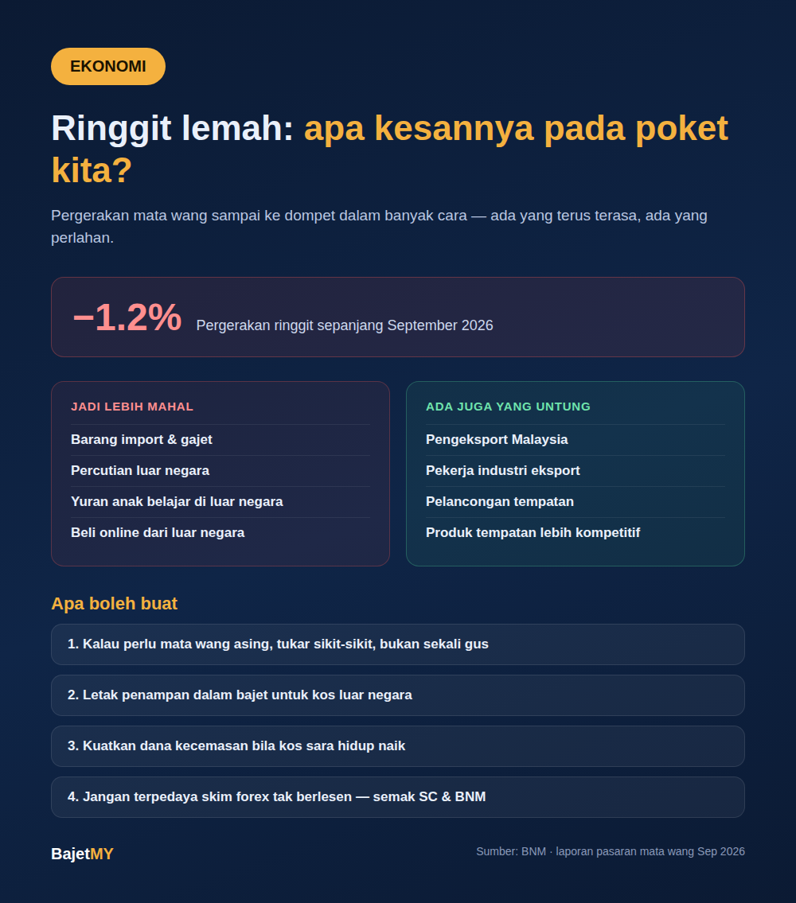

Ringgit turun sekitar 1.2% sepanjang September 2026. Bunyinya kecil, tapi pergerakan mata wang sebenarnya sampai ke poket kita dalam banyak cara — ada yang terus terasa, ada yang perlahan-lahan.

Kenapa ringgit naik turun?
Nilai ringgit bergantung pada permintaan dan penawaran terhadap mata wang kita — dipengaruhi oleh harga minyak dan komoditi, kadar faedah di Malaysia berbanding negara lain (terutamanya Amerika Syarikat), aliran pelaburan asing, dan sentimen pasaran global. Beberapa penganalisis melihat harga minyak dan permintaan eksport berkaitan AI sebagai faktor yang boleh menyokong ringgit ke depan, tetapi tiada siapa boleh jamin arah pergerakan jangka pendek.
Siapa paling terkesan?
| Situasi | Kesan ringgit lemah |
|---|---|
| Barang import (elektronik, kereta, sesetengah makanan) | Kos import naik — lambat laun boleh dipindahkan kepada pengguna |
| Percutian luar negara | RM yang sama dapat kurang mata wang asing |
| Anak belajar di luar negara | Yuran dan kos sara hidup dalam mata wang asing jadi lebih mahal dalam RM |
| Beli barang online dari luar negara | Harga dalam RM naik walaupun harga asal tak berubah |
| Pengeksport & pekerja industri eksport | Barangan Malaysia jadi lebih murah di mata pembeli asing — boleh bantu jualan |
| Pelancongan tempatan | Malaysia jadi destinasi lebih murah untuk pelancong asing |
Jadi ringgit lemah bukan semuanya buruk — tapi untuk kebanyakan isi rumah yang banyak berbelanja pada barang import, kesannya lebih terasa pada kos sara hidup.
Apa yang boleh kita buat?
- Jangan panik tukar mata wang — pergerakan jangka pendek sukar diramal. Kalau perlu mata wang asing (contoh untuk yuran), pertimbangkan tukar sedikit demi sedikit, bukan sekali gus.
- Semak bajet untuk barang import — kalau ada pembelian besar melibatkan barang import (gajet, kereta), bandingkan harga dan jangan tergesa-gesa.
- Rancang awal kos luar negara — untuk yuran belajar atau percutian, sediakan ruang tambahan dalam bajet sebagai penampan pergerakan kadar tukaran.
- Utamakan dana kecemasan — bila kos sara hidup naik, dana kecemasan jadi lebih penting untuk elak bergantung pada hutang.
- Hati-hati dengan tawaran "lindung nilai" atau forex — ringgit lemah sering dijadikan alasan untuk promosi skim forex atau pelaburan mata wang tak berlesen. Semak senarai amaran SC dan BNM dahulu.
Ringkasan
Ringgit yang lemah menjadikan barang import, percutian dan pendidikan luar negara lebih mahal dalam RM, tetapi boleh membantu pengeksport dan pelancongan tempatan. Untuk isi rumah, langkah paling praktikal ialah semak bajet untuk perbelanjaan berkaitan mata wang asing, rancang awal, dan kuatkan dana kecemasan — bukan cuba meneka pergerakan mata wang.
Sumber
- Bank Negara Malaysia — kadar pertukaran harian
- Laporan pasaran mata wang, September 2026